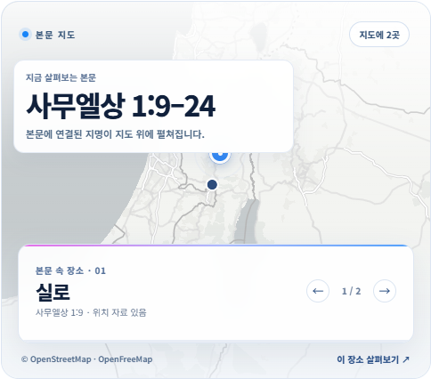
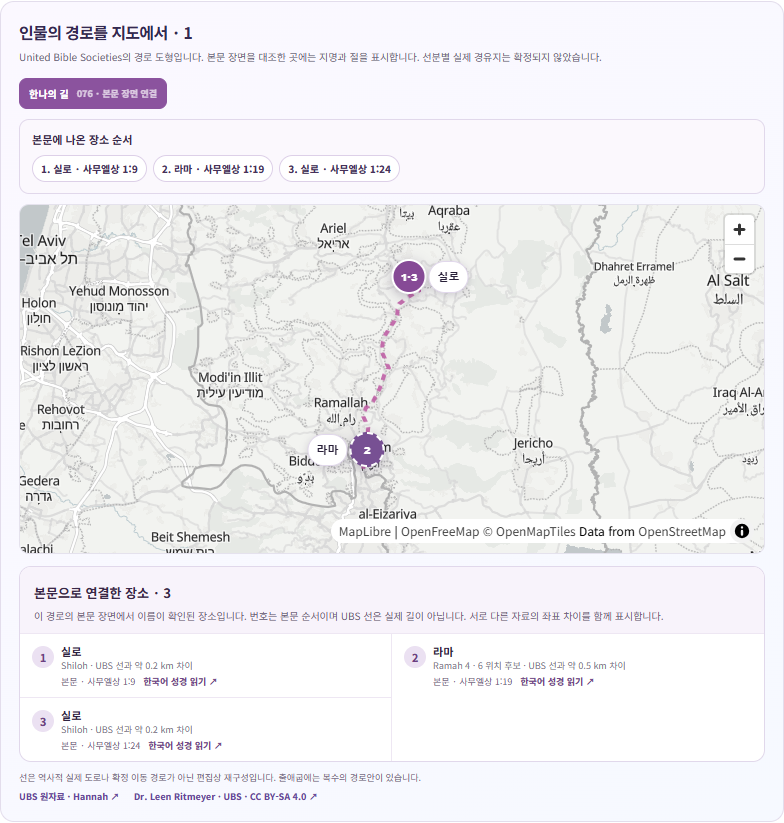

목회 AI 연구소MINISTRY AI LAB
BIBLE PLACE ATLAS성경 지리 연구 도구
본문을 입력하면
장소가 보입니다.
성경에 나오는 지명을 지도 위에서 찾고,
해당 구절과 자료의 근거를 함께 살펴보세요.
무료 · 회원가입 없음 · 광고 없음

sermon-context-studio.vercel.app01 / 03
성경 지리 연구 도구
성경에 나오는 지명을 지도 위에서 찾고,
해당 구절과 자료의 근거를 함께 살펴보세요.
무료 · 회원가입 없음 · 광고 없음

말씀에서 지도로
본문 주소를 입력하면 지명이 나온 절을 찾고, 지도에서 위치 후보를 비교한 뒤 성경 본문으로 돌아갈 수 있습니다.
지명·구절을 연결한 성경여행
검토된 여정에서 지명과 구절을
본문 순서대로 살펴보세요.
한나의 길 · 사무엘상 1:9, 1:19, 1:24
지도선은 실제 고대 도로가 아닌 자료의 재구성입니다.
